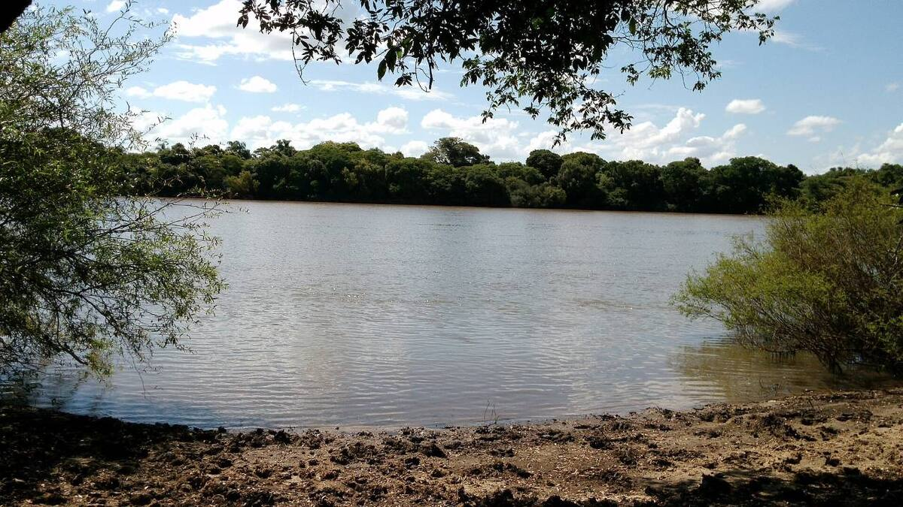
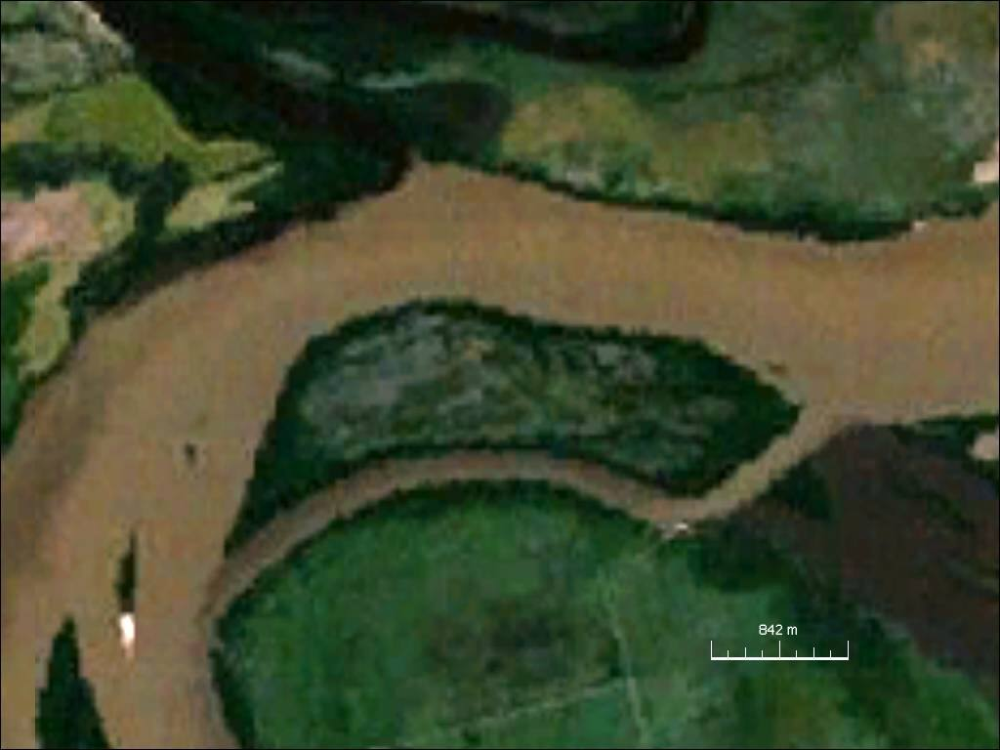
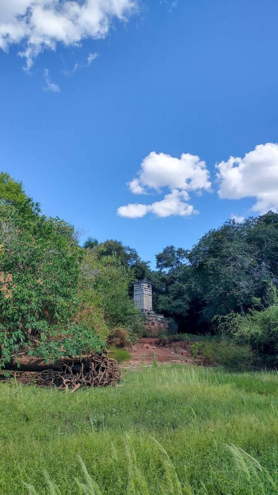
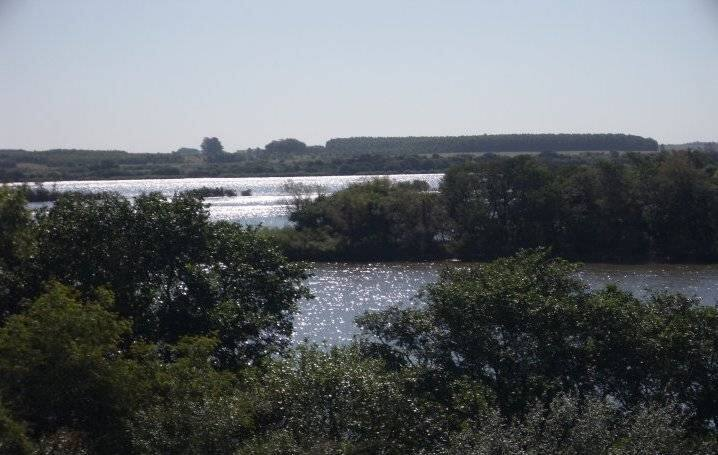

Tres países a la vista
Donde el Cuareim desemboca en el río Uruguay se encuentran tres ciudades de tres países: Bella Unión, en Uruguay; Barra do Quaraí, en Brasil, y Monte Caseros, en Argentina. Es la triple frontera más austral de América.
En 2019 las tres ciudades formaron el primer Comité de Integración Trinacional del Mercosur, para trabajar juntas en temas como cultura, ambiente, turismo y deportes. Bella Unión y Barra do Quaraí están unidas por un puente; entre Bella Unión y Monte Caseros el cruce se hace en embarcación.
Una isla en disputa
La Isla Brasilera mide unos 3,7 km de largo y menos de un kilómetro de ancho. Brasil la considera parte de Barra do Quaraí y apoya su postura en el tratado de límites de 1851. Uruguay la incluyó históricamente en Bella Unión.
El desacuerdo no afecta la buena relación entre los dos países y ninguno mantiene fuerzas en la isla. En la zona hay un marco de mármol de 1862, el Marco Imperial, que señala el límite.
Fotos

Foto: Gmmv1980 · CC BY-SA 4.0


Foto: NASA · Dominio público


Foto: Pedroborches · CC BY-SA 4.0


Foto: MEL LAPAZ · CC BY-SA 3.0